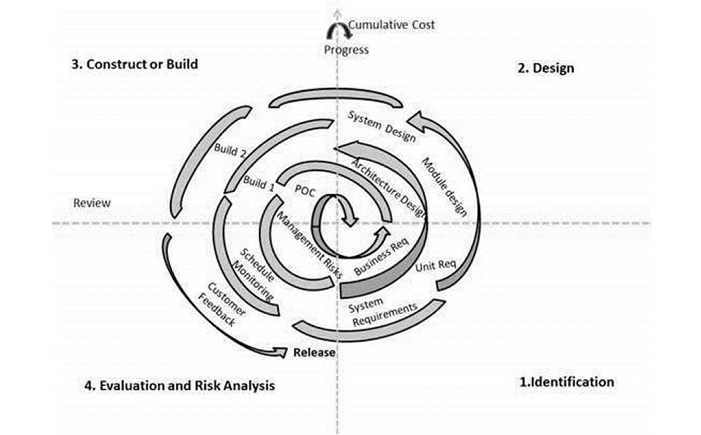
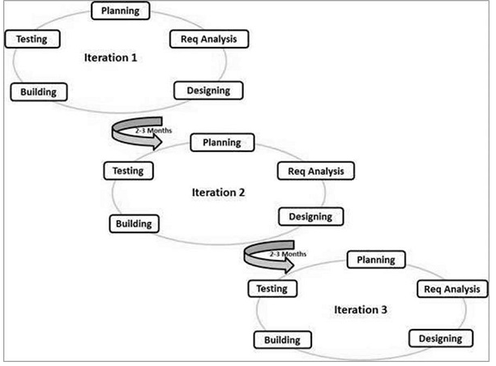

Koskmudelit kirjeldas esmakordselt Winston W. Royce 1970. aastal.
Koskmudel on järjestikune mudel, mida kasutatakse erineva tarkvara loomiseks, kus projekt kulgeb pidevalt allapoole ega pöördu tagasi samamoodi nagu koskede puhul. Niisiis tähendab kose mudel, et järgmise etapi juurde peaks liikuma alles siis, kui eelmine etapp on lõpule viidud, kuigi mõne mudeli puhul võivad mõningad variatsioonid ja muutused olla.
Koskmudelit saab kasutada, kui:
Tarkvara spetsifikatsioon, kavand ja realisatsioon on tükeldatud osadeks, mida arendatakse järjest ja kordamööda. (Mills jt 1980) Tulemusena peaks vähenema ümbertegemiste hulk ja ka kliendid saavad võimaluse oma vajadusi pikema aja vältel ringi mõelda. See mudel kombineerib lineaarse arenduse iteratiivse mõtlemise ja prototüüpimise.
Alguses määratakse nõudmised üldisemal kujul, samuti millised teenused on tähtsamad ja millised vähemtähtsad. Edasi määratakse tarneosad – mitme tarnena ja millest koosnevana klient oma tarkvara saama hakkab. Iga osa peab andma süsteemi kindla funktsionaalsuse, sh tootmist alustatakse kõrgema prioriteediga osadest. Kui osad on määratud, võetakse ette 1. osa ja hakatakse seda detailiseerima, kasutades selleks sobivaimat protsessi (ja miks ka mitte koskmudelit). Samaaegselt saab täpsustada teiste osade nõudmisi, kuid töös oleva tüki omad on külmutatud. Kui väga vaja, pöördutakse nende juurde tagasi hiljem. Kui tükk saab valmis, tarnitakse see kliendile, kes saab selle töösse rakendada.
Klient saab juba proovida, katsetada ning tal on lihtsam kujundada nõudmisi järgmiste osade jaoks (või sama osa hilisemate versioonide tarvis). Uued osad liidestatakse olemasolevatega. Kõiki osi ei pea arendama sama protsessi kasutades.
Eelised:
1. Klient ei pea lõputult ootama, esmaseid soove saab juba rahuldada, juba saab tööd teha
2. Esimesed osad on ka justkui prototüübid, mis aitavad järgmiste osade funktsionaalsust
täpsustada, kliendil hakkab tekkima mingi kogemus ja arusaamine.
3. Kogu projekti läbikukkumise risk on väiksem. Probleemid võivad tekkida mõnede osadega, kuid
eeldatavasti mitte kõigiga.
4. Et kõrgema prioriteediga osad esimestena töösse saavad, läbivad nad ka intensiivsema testimise
kliendi enda poolt.
5. Maandab tehnilisi riske – kui kõige uuemat riistvara (see ei pruugi olla arvuti) pole veel arenduse
alguses võimalik saada, siis saab tööd alustada nendest osadest, mis riistavarast tugevalt ei sõltu
jms
Probleemid:
Paraja suurusega osade fikseerimine – ei saa olla liiga suur ega liiga väike (mitte enam kui 20 000
koodirida) ja lisaks tagama süsteemi ühe konkreetse funktsionaalsuse. Parajat suurust on raske
saavutada ja õnnetuseks kasutatakse tihti sama funktsionaalsust süsteemi erinevate osade juures.
Seda mudelit kasutab tänapäeval tuntuim meetod XP – “extreme programming”.
Kui kasutajal või arendajal on detailid ebaselged, võib kasu olla prototüüpimisele oreinteeritud arendusmudelist. Prototüüp aitab määrata nõudmisi.
Etapid on järgmised:
Probleemid:
Klient ei saa aru, et prototüüp püsib enamasti koos “kleeplindi ja nätsu abil”. Et tegelikult selleks, et saada korralikku töötavat süsteemi, tuleb kõike otsast alata ja olemasolev asi ära visata. Ta nõuab visalt väikeste “vigade kõrvaldamist” ja programmi töösse andmist. Selle tulemusena arendaja kiirustab, kasutab esimesi ettejuhtuvaid ja lihtsaid vahendeid, ebaeffektiivseid algoritme jne. Hiljem aga unustab, et see oli mõeldud ajutisena. Ei ole midagi püsivamat kui ajutised lahendused. Kui aga mängureeglid kohe alguses paika panna, peaks see mudale päris hästi töötama.
Spiraalse arengumudeli pakkus esimest korda välja Boehm 1988 a. Protsessi kulgemist kujutab spiraal. Iga keerd on mingi tarkvaraprotsessi faas. Esimene kordus võib olla näiteks seotud süsteemi teostatavuse uurimisega, teine nõudmiste kirjeldamisega, järgmine kavandamisega jne. Mitu kordust on enamasti seotud tarkvara realiseerimisega, kus tema ehitamine toimub inkrementaalselt. Alustatakse spiraali keskelt ja liigutakse päripäeva. Iga kordus on jaotatud 3 kuni 6 sektorisse (erinevad autorid jagavad erinevalt). Sektorite töömahukus ei pruugi olla ühesugune.
Boehm'i järgi on sektoreid neli:
1. Eesmärkide seadmine (Objective setting) – määratakse selle faasi ehk spiraalikeeru eesmärgid, piirangud protsessis, tulemused, juhtimisplaan, võimalikud riskid, alternatiivsed strateegiad lähtudes riskidest.
2. Riskide hindamine ja maandamine (Risk assessment and reduction) – iga leitud riski jaoks tehakse analüüs, võetakse midagi ette riskide maandamiseks (nt risk, et nõudmised pole adekvaatsed: tehakse prototüüp)
3. Arendus ja valideerimine (development and validation) – valitakse arendusmudel, mis lähtub hinnatud riskidest (mudel peab olema selline, mis riske vähendada aitab). Nt kui kasutajaliides on suurim risk, siis võib aidata prototüüpimisele tuginev arendus.
4. Planeerimine (planning) – projekt vaadatakse üle ja tehakse otsus, kas jätkata järgmisel spiraalikeerul, kui otsustatakse jätkata, tehakse järgmise faasi jaoks plaan.
Selle mudeli kõige suurem erinevus teistest on riskidega arvestamine. Risk – so miski, mis saab untsu minna. Riskide tõttu ületatakse tähtajad ja maksumus, seepärast peab riskidega arvestama. Konkreetseid faase, nagu kavandamine või spetsifitseerimine ei eristata.
V mudel on juga mudeli pikendus. Sellel on iga arendusetapi jaoks vastav testimisfaas. Seetõttu on arengutsükli iga etapi jaoks seotud testimise etapp. Paralleelselt kavandatakse vastav arendusetapi testimisetapp. Seda mudelit tuntakse ka kui verifitseerimise ja valideerimise mudelit.
Esimene etapp on nõuete kogumine. SRS on selles etapis ette valmistatud. Selles etapis tehakse ka vastuvõtu kavandamise kava. See on sisend aktsepteerimistestimiseks. Projekteerimisetapp hõlmab kahte etappi. Arhitektuurikujundus hõlmab süsteemi jaoks vajalikku arhitektuuri. See on tuntud kui kõrgetasemeline disain. Mooduli disain on tuntud kui madala taseme disain. Tegelik kodeerimine algab kodeerimisfaasis.
Ühikute testimisel testitakse väikseid mooduleid või ühikuid. Integreerimise testimise eesmärk on testida kahe erineva mooduli voogu. Süsteemi testimise eesmärk on kontrollida kogu süsteemi funktsionaalsust. Vastuvõtu testimine on tarkvara testimine kasutaja keskkonnas. Samuti kontrollitakse, kas süsteem on kooskõlas tarkvaranõuete spetsifikatsiooniga.
Üldiselt sobib v mudel, kui projekt on lühike ja kui nõuded on väga selged. See ei ole sobiv suurte, keerukate ja objektile suunatud projektide jaoks.
SDLC üks väga tõhusaid meetodeid on Agile Model. Agiilne mudel keskendub nii arenduse kui ka testimise jätkuvale korramisele.
Agiilne mudeliprotsess SDLC-s hõlbustab arendajaid meeskonnaga suhtlemisel ja annab kliendile käimasoleva projekti kohta täieliku idee ning teeb vajadusel muudatusi. See paneb arendajad muudatusi tegema vastavalt kliendi interaktsioonile ja säästab ümbertöötamisel palju aega. Kuna see lähenemine töötab arendamisel ja testimisel käsikäes, töötavad arendajad ja testijad koos.
Agiilses testimises kasutatakse erinevat tüüpi meetodeid, mis põhinevad arengustiilil. Allpool on toodud paindlik testimismetoodika:
Scrum
Kanban
Äärmuslik metoodika
Kristallide metoodika
Dünaamiline tarkvara arendamise meetod (DSDM)
Funktsionaalne arendamine (FDD)
Lean tarkvara arendamine
Agile mudel on edukas kui traditsiooniline SDLC mudel, kuna see töötab nii arendus- kui ka testimismeeskondadega. See parandab kvaliteeti. Kuna see mudel koosneb uuenduslikest tavadest, mis hõlmavad sprindi planeerimist, armatuurlaua kavandamist ja püstijalakoosolekut, teeb see koostööd kliendi, organisatsiooni ja müüjate vahel. Kliendi kaasamine arendusfaasi annab neile usalduse kvaliteetse toote vastu. Agile on paindlik, hõlbustades sellega arendajaid, sidusrühmi ja testijaid.
